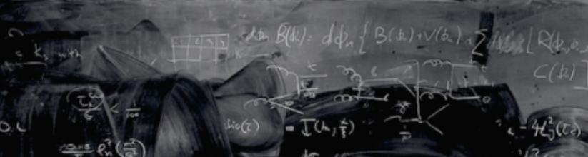
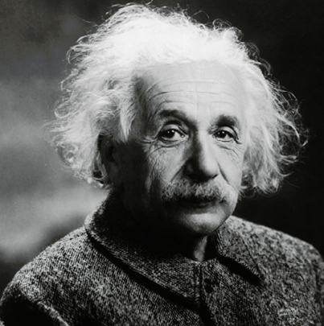

Thaumaturge : A worker of wonders and performer of miracle.
The sun slowly crept up the hillside as the last dredges of the night faded away and the smell of early morning dew prevailed the dingy halls of Kaiser Wilhelm Institute.
The Assistant walked briskly through the early morning crowd. His attention focused on arranging the loose sheets of documents in his hands which earned him contemptuous looks from the group of students for disturbing the overall tranquility of a quiet morning. He held in his hands a stack of papers, and peeking out from the middle of the pile was the morning daily with the headline “Werner Heisenberg: The Columbus of quantum mechanics” faintly visible over a circular shaped coffee stain on the photograph of Heisenberg, his boyishly handsome face smiling at the camera and his piercing blue eyes gazing distantly as if thinking about a secret only he knew.
As the Assistant reached the stairs, he stopped for a moment and wiped the sheen of sweat that had formed
on his brow. As he climbed the stairs to his intended destination, he prepared what he had to speak
beforehand to the Director. Albert Einstein was known to be prone to…outbursts at times. His genius was
undeniable, but his temper was also infamous.
“Herr Director, I have been requested by the
board…Agh…Nein, Herr Director, I am sure you have heard of Werner Heisenberg…” Mumbling to himself, he
walked up to the engraved door, waited for a moment to gather his thoughts and then knocked.
“Enter,” said a deep calm voice. Upon entering the room, the Assistant was greeted by the sight of the Director, deep in thought, writing on his chalkboard.
“Sit, Jurgen”, Einstein said, and the Assistant sat upon the chair offered. “Herr Director, I have been
requested…….”. “No”. “….sorry, director?” I said no, I will not be endorsing Heisenberg’s….principle.”
“But director..why?” said the assistant flustered.
“Why? I thought it was self-evident, Jurgen
because it is wrong,” Einstein said and went about writing on the chalkboard.


The Assistant was flummoxed and, for a moment, sat in silence wondering what to say next. The room was silent but for the Director’s chalk tapping on the chalkboard. After a few seconds, the Assistant said, “But how Director. Heisenberg’s principle is a hallmark achievement in science, its maths is irrefutable, and its implications..are ineffable.” For a moment, Einstein said nothing, and the Assistant was going to try again when Einstein stopped writing on the chalkboard, kept the sheets of paper he had in his hands on the table, looked at Jurgen right in the eyes and said very slowly.
“Ineffable, you say.”
“The only efficacy that principle has is that of a party trick. You can’t possibly know the position and the momentum of an electron at the same time. Honestly, Jurgen, don’t tell me you have given in to the rhetoric of journalists. A man of science accepting a theory as fallacious as this, it is outrageous really.” Jurgen sat silently for a moment, thinking about what he was going to say next. He had to convince the Director, the board had entrusted him with the task, and he could not fail. Succeeding in this might mean an approval of his thesis or maybe even a professorship, and so he tried again.
“Director Heisenberg’s theory has successfully disproved the Bohr model of atom, and Bohr himself has
accepted the flaws in his model. In fact, Bohr has been defending the principle rather fervently in the
Oxford circuit. The proof is sound, and better still, it does not make any assumptions. Surely you don’t
mean to discredit such a momentous theory as a party trick. Only the other day, Professor Lindengard was
telling me how wide the implications are not just scientifically but mathematically as well…”
“THE
MATH IS NOTHING, THE PROOF IS JUST A MATHEMATICAL TRICK NOTHING ELSE. This principle of yours goes
against the fundamental tenets of science. It is an attack on everything we hold dear in the scientific
community. Do you not see, if this monstrosity lasts, we will lose everything we hold dear.”
The Assistant looked stunned at the sudden display of emotion. Einstein was standing up to his full height now. Pure emotion showed in his watery eyes, which were beginning to tear up. His hand was quivering, and the chalk he had been holding had fallen to the floor and had been neatly broken in two. The Director paused for a moment, took a deep breath and then said,
“As a kid, I was an inquisitive child. We all were. That’s why we are where we are today. I wanted to know everything about the world, everything from my mother’s wardrobe to why the sky was blue. Once my father took me to a gipsy carnival where a great Thaumaturge was coming. He was a performer of miracles. It was said he could levitate objects into the air. I remember being in sheer awe of the marvel. Everyone in our town went to see him. As I watched the miracle unfold before my very eyes, I saw a man in the crowd smile at the Conjurer and then, laughing gently to himself, went away. I wondered what could have possibly caused the man to laugh at such a miraculous feat. So I followed him and asked him just that. He started laughing heartily at my question, and then after ruffling my hair, he said, “Oh my child, you do not see, it is a magnet, nothing more, nothing less. Your Thaumaturge is an intelligent man, but he is not the true magician here. The real magic is the science behind his incredible feat. That is the real miracle.”
“I did not sleep that night. Naturally, I wanted to be a magician as well. So I embarked on a journey
into the scientific world, and I have never stopped since. So you see, why I am a scientist today?
Because a scientist is a true Thaumaturge, a performer of wonders. I want to uncover every secret that
the universe holds, to know why the world is the way it is. And the only way to do that is through
science, the omnipotent, the omnipresent and the omniscient.”
Einstein turned away from Jurgen and
went up to the window in his room and looked at the bright morning outside.
“My entire life,” he said in a low voice. “Has been built around this one idea, that science knows all, that I, given the right tools, can uncover the secrets of the universe, that there is a fundamental clockwork to things and all can be revealed. And now Heisenberg tells me that I cannot know the position and momentum of an electron simultaneously.”
This is not meant as an experimental challenge, rather a challenge to all of science, because Heisenberg says that Science does not want you to know. This statement in and of itself is a paradox because how can science not know such a trivial thing. Can it really be that my life has been built around a lie, that our world is indeed random, and there is no way to really know all the secrets of the universe?”
“Is the Thaumaturge’s wonder just a fatal trick? Does science …..really not have all the answers? Tell me that I am wrong, that this principle does not encroach upon the ideals that have shaped our human existence in the past century. That Heisenberg does not attack our very core as a species. Tell me, Jurgen, answer these questions for me, and I will gladly endorse this principle of yours.”
The Assistant sat in stunned silence. He lowered his eyes. He could not answers the Directors questions. He stared at the hard ground and wondered if the Director was right. As the silence stretched out, Jurgen stood up from the chair, “Auf Wiedersehen Herr Director” and stepped out of the room Einstein took a deep breath and went to work, his chalk lightly tapping away at the board as a cool breeze blew through the room from the open window ruffling his short hair.


- In December 1927, Heisenberg published his Uncertainty Principle.
- In 1955 Albert Einstein would succumb to aortic aneurysm, till his dying day he would not accept the uncertainty principle.
- In 1996, 3 German scientists would prove the Heisenberg Uncertainty principle irrefutably…correct